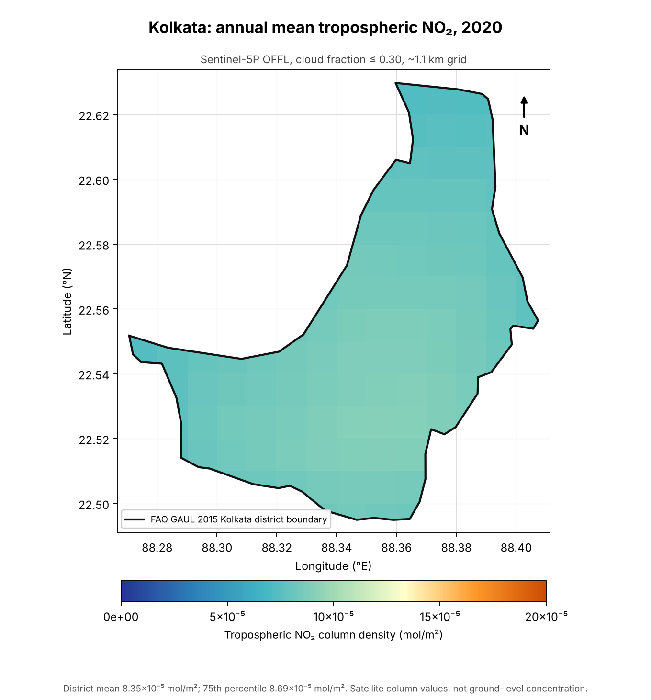
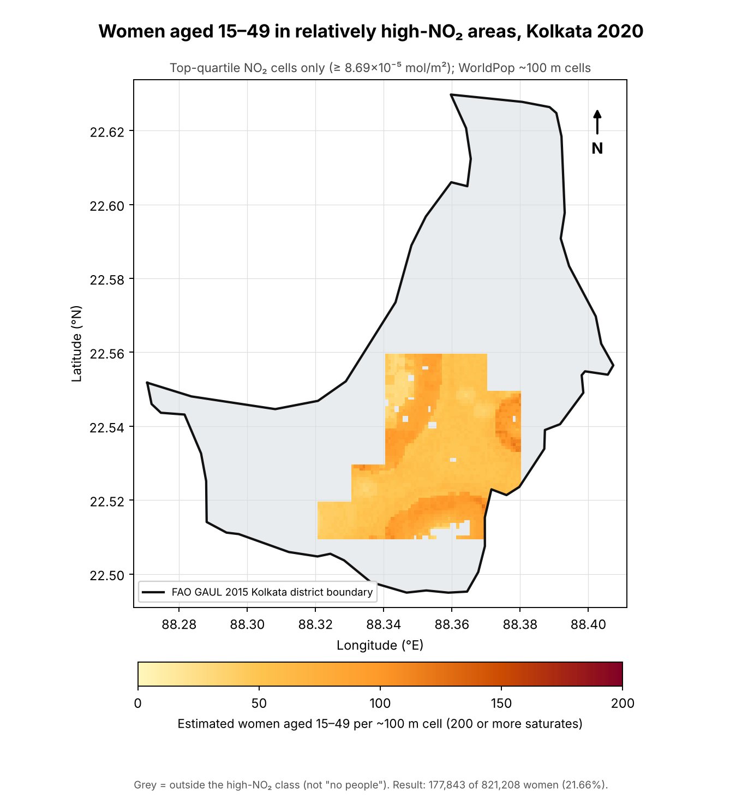
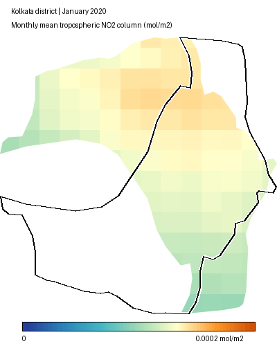

Kolkata: satellite NO₂ and where women aged 15–49 live, 2020
Individual Google Earth Engine urban analysis (Question 2, Test 2) · VIDYA ANAND · Roll No. HS25M114
1. Question
What share of women aged 15–49 live in the highest quartile of satellite-observed annual tropospheric NO₂ within the Kolkata study boundary?
Answer: about 177,843 of 821,208 estimated women aged 15–49 (21.66%) reside in areas with relatively high satellite-observed NO₂ columns in 2020.
2. Data and method
- Boundary: FAO GAUL 2015 level-2 (ADM2) polygon for Kolkata, West Bengal, via Earth Engine (
FAO/GAUL/2015/level2), area 91.8 km². This is a district polygon and can differ from the Kolkata Municipal Corporation boundary; it defines the denominator for every number on this page. - NO₂: Sentinel-5P OFFL L3 tropospheric NO₂ column density (
COPERNICUS/S5P/OFFL/L3_NO2), 1 Jan–31 Dec 2020, images with cloud fraction > 0.30 masked, then averaged. Analysis scale about 1.1 km. - High NO₂: pixels at or above the district's own 75th percentile of the annual mean (8.69×10⁻⁵ mol/m²). This is a city-specific relative rule, not a health standard.
- Population: WorldPop 2020 age–sex (
WorldPop/GP/100m/pop_age_sex), female bands F_15 to F_45 summed (ages 15–49), about 100 m cells. The coarse NO₂ class is assigned to each WorldPop cell by nearest neighbour. - Share = women in high-NO₂ cells ÷ all women aged 15–49 in the district.
3. Maps


4. Dynamic output: monthly NO₂ animation


Monthly district mean
Figure 4. District-mean NO₂ by month (red = highest, blue = lowest). Data: kolkata_monthly_no2_2020.csv.
5. Numerical results
| Study area | FAO GAUL 2015 ADM2 Kolkata district (91.8 km²) |
|---|---|
| Annual district mean NO₂ | 8.349×10⁻⁵ mol/m² |
| High-NO₂ threshold (75th percentile) | 8.690×10⁻⁵ mol/m² |
| Women aged 15–49 in district (WorldPop) | 821,208 |
| Women aged 15–49 in high-NO₂ cells | 177,843 |
| Share residing in relatively high-NO₂ areas | 21.66% |
| Women with valid annual NO₂ data | 100% |
| Highest monthly mean | January, 12.8×10⁻⁵ mol/m² |
| Lowest monthly mean | July, 3.9×10⁻⁵ mol/m² |
6. Discussion
Spatial pattern. Annual NO₂ is highest across the central and south-central part of the district and lower toward the northern end and the western tail (Figure 1). The within-district range is narrow, roughly 7×10⁻⁵ to 9×10⁻⁵ mol/m², so the differences are modest. The top-quartile area forms a contiguous block of coarse pixels, and the women living inside it are concentrated in that central-southern block (Figure 2).
Exposure share. The top quartile of pixels contains 21.66% of the district's women aged 15–49. If those pixels cover roughly a quarter of the district, this is slightly below a proportional share, so the highest-NO₂ cells are not simply the most populated ones. The result describes where women reside relative to satellite-observed values; it is not a measure of any person's personal or ground-level exposure.
Temporal pattern. District-mean NO₂ is highest in January (12.8×10⁻⁵) and December (12.1×10⁻⁵) and lowest from July to September (about 4×10⁻⁵) (Figures 3–4). This is the usual winter high and monsoon low for the region; plausible reasons are shallower winter mixing layers and monsoon rain and ventilation, but this analysis does not test causes. The spring decline (March to May 2020) coincides with COVID-19 restrictions, but a single year cannot separate that effect from the normal seasonal fall.
Limitations.
- Spatial resolution: Sentinel-5P is about 1.1 km, so each pixel spans many WorldPop cells and cannot show street-level differences. The district is only about 92 km², so it contains few NO₂ pixels.
- Temporal resolution and gaps: only about one overpass per day, with cloud filtering (> 0.30 removed), which thins out data in the monsoon. Monthly values average different numbers of valid observations.
- Column vs surface: tropospheric column density is not ground-level concentration.
- Population data: WorldPop values are modelled estimates, not a census count, and show where people live, not where they spend the day.
- Boundary: the 2015 GAUL district polygon differs from municipal limits (the dataset has since been superseded by a 2025 version).
- Relative threshold: "high" means high compared with the rest of Kolkata in 2020, not above any health guideline.
- Single year: 2020 was unusual because of lockdowns, so it may not represent typical conditions.